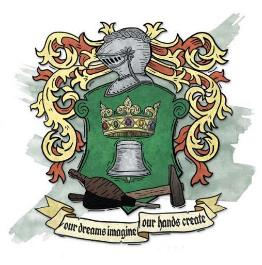

塞尔是伽利法帝国的心脏。被称为伽利法王冠上的璀璨宝石、神奇的塞尔。然而这个国家实际上是什么样子的呢？自从塞尔被毁灭以后，关于塞尔的传闻里重点往往是塞尔难民当前的困境，而不是他们失去的国家。作为一个塞尔出身的角色，你所珍视的回忆是什么？你的童年是什么样的？如果你希望重建你的祖国，你渴望重塑的是什么？
伽利法·维纳恩是一位军事上的天才，而他的长女塞尔——安黛尔的双胞胎姐姐【译者注：伽利法帝国的五个行省（终末战争时期变成了五国）是以初代国君伽利法的五个子女的名字命名的，此标注是为了方便后面阅读】，希望曾经彼此兵戎相向的五国可以如一家人般生活在一个屋檐之下。强悍的坎纳斯、虔诚的达斯卡里和睿智的瑟利奥斯特应该为了更伟大的目标而一同努力奋斗。在划定帝国的版图时，伽利法宣布塞尔将是帝国的中心。他的长女将管理这个行省，并使用她所需要的一切来追求她的理想。塞尔的徽章是绿徽之下——交织锤子的风箱上的王冠与鸣钟——是帝国君王之所在，昭告革新之鸣钟，创造未来之工匠。塞尔的格言很好地诠释了这片土地以及她的人民内心。"我们梦之所想，应由自己双手创造"。
伽利法帝国各行省在很大程度上保留了它们曾经的作为独立国家时的文化和传统。在许多方面里，他们的特色得到了加强和发扬。每个行省都拥有一个帝国的支柱：安黛尔的奥术评议会、布鲁兰的国王密使、坎纳斯的瑞肯马克军校、瑟雷恩的大圣堂。塞尔是个例外。塞尔没有拘泥于米卓的旧有文化上，而是从整个伽利法帝国引进了大批的能工巧匠。塞尔不是任何一项学科的中心，而是作为一个枢纽将所有这些东西融合到一起——成为整个伽利法帝国中是为杰出的成就。当奥术评议会改进完善了永明提灯后，米卓城是第一个用永明提灯照亮街道的城市。士兵们都在瑞肯马克受训，但最优秀的战士会在弗米谢宫廷卫队服役。虽然米卓是这座奇迹之城是最前沿的展示橱窗。但塞尔的这一原则被应用于整个中塞尔地区。通过教育、艺术、甚至农业，塞尔展示了伽利法帝国能够做到的最好的一切。
这种发展持续了几个世纪并不断发展。坎纳斯人的坚韧，瑟雷恩人的睿智，布鲁兰人的勤奋，安黛尔人的聪慧。在塞尔的人民身上可以追溯到所有这些国家特点，他们也坚信自己拥有这份能力。除此之外，塞尔人还努力做到有创意，创新和艺术感。
塞尔的艺术气质（有些家伙会说这是异想天开）被卡尼斯家族的存在所平衡和维持，卡尼斯家族的总部位于伟大的梅肯（Making）城。卡尼斯家族最伟大的锻造厂遍布塞尔，这为塞尔的奇迹提供了现实的工业基础。而这些奇迹有很多种形式。安黛尔的奥术评议会专注于魔法的实际应用，而塞尔的维纳恩艺术学院则想要探索奥术的艺术潜力。米卓是一座充满光明和奇迹的城市。游客可以与逝去英雄和国王的幻象对话，或者观看历史时刻的重演。据说，在米卓没有人会遭受饥寒。塞尔人说，这反映了塞尔人慷慨与无私的精神。反对者则指出，这些社会福利项目之所以能够实现，是因为吸收其他省份的人民缴纳的税收。诚然，塞尔掌握着伽利法帝国的财富，其生活水平高于其他任何行省。这是荒颓吗？还是说它是一项测试工作？为的是一个有朝一日可以应用于全国的社会模式？我们无从得知。如今的塞尔人会为失去的往日感到悲伤，而其他国家的人民则指责塞尔人的生活方式是寄生虫。"我们的梦想是什么，我们的双手去就创造什么。"在贫苦的外地人看来，虽然塞尔人建造了许多东西，但他们使用的是别人辛勤工作所收集的资源。
伽利法的继承传统进一步助长了这种怨恨。以伽利法一世为例，君王的子女将担任五个行省的总督。长子（女）管理塞尔，在国王去世后，他们将接过王冠，他们的孩子将接管各省的管理职位。之前的总督将作为摄政者，直到孩子们成年，之后则作为顾问。当一个君主没有五个孩子时，以前的总督将保留这些职位。但这个原则很简单。塞尔是伽利法的核心，其他一切都将围绕它展开。
伽利法在塞尔的目标是融合其他国家的文化精华来创造出新的事物。在新成立的瑟雷恩（Thrane）、安黛尔（Aundair）和布鲁兰（Breland），人们保留了他们的旧传统，统治贵族往往被纳入新的管理结构；同样，伽利法也保留了他的家乡坎纳斯的习俗。但在旧米卓王国——领土大致相当于现今的哀伤故地——旧的制度和统治者被推到一边，为塞尔的梦想腾出空间。米卓的一些旧贵族接受了这条新的道路。其他人则被伽利法异地安置，在旧国界之外给他们安排了新的封地。
南塞尔Southern Cyre包含了现在的达贡地区。在伽利法帝国刚建立的时候，还是一块基本上没有得到整治，一直是帝国阴影下的一块落后地区。它的人民最终还是发展了起来，并为他们作为塞尔人的身份而感到自豪，并且他们也会模仿中央塞尔的习俗。不过他们很少会有能够在北方进行投资的财富或分享与之而来的奇迹。南塞尔的居民与地精之间冲突不断，有几次发展到很严重的程度，但直到终末战争之前，加尔达尔的地精氏族基本上都躲在进了山区和阴影里。
东塞尔Eastern Cyre——也就是现在的维伦那地区——实际上是一个有着截然不同的文化和价值观的独立国家。这里可以说是伽利法最大的失败。该地区最初定居着来自索隆娜西部的昆南地区的移民。伽利法一世想要旧米卓的土地，所以他把东塞尔的权力交给了米卓的旧贵族，让他们成为昆南移民们的封建领主。刀锋沙漠是物理和文化上的分界线，在授予贵族们土地后，伽利法基本上没有再理会过他们。因此，贵族们仍坚持着米卓的旧传统，而不是接受塞尔的新文化。许多人小气而骄傲，对这种安排不满意并残忍地把发泄在他们的昆南臣民身上。有些人想知道为什么精灵们夺取维伦那的控制权如此简单：首当其冲是因为昆南人对他们的塞尔统治者（一般称为 “王座”）没有爱，许多人觉得他们在新政权下其实过得更好。
在嘉奥特王的统治下，塞尔依旧闪耀。有抱负的艺术家和年轻的贵族们来到帝国的中心，而最有前途的工匠们则在梅肯（Making）城定居。嘉奥特王对塞尔给予了极大的关注——扩建了弗米谢宫，与欧瑞恩家族合作扩大了塞尔的闪电列车轨道铺设，并在维纳恩艺术学院和天命诸神大圣堂上花费了数十万的伽里法金币。
嘉奥特王死后，伽利法帝国卷入内战的漩涡。起初，塞尔人的士气很高。站在蜜珊女王背后是几个世纪以来的传统。人人都知道塞尔拥有最好的东西：最好的奥术师，最好的士兵，最出色的工匠。从某种程度上说，这是真的，但当与坎纳斯或瑟雷恩的军事文化相比，单单一支由杰出士兵组成的部队意义不大。塞尔最优秀的奥术师是艺术家和理论学者，而安黛尔则长期致力于将魔法作为战争的工具。杰出的工匠们在很大程度上与卡尼斯家族有关，后者在战争中保持中立。如果把各国视为玩家职业，瑟雷恩是圣武士，坎纳斯是战士，安黛尔是法师，布鲁兰是游荡者。在这个队伍中，塞尔就是诗人——优雅且聪明，什么都会点……但诗人最好跟别人组队冒险，而不要去玩SOLO【译者：明明5E的诗人很强啊】。
塞尔不得不接受现实。起初，塞尔严重依赖雇佣兵，因为它是伽利法帝国的国库所在地，什么都可能缺就是不缺钱。但随着时间的推移和冲突范围的明确，塞尔人也开始投身于战争。塞尔缺乏坎纳斯或瑟雷恩文化中的尚武精神，但塞尔是伽利法帝国的绝对正统这一思想支撑着塞尔的人民。除此之外，在塞尔人的眼中，塞尔就是伽利法帝国。塞尔体现了帝国的理想，它会成为这世上最美好的国度——而这是值得为之奋斗的东西。尽管如此，这场内战对塞尔人的心理造成了巨大的打击。几个世纪以来，塞尔人一直将自己视为展台上的明星，受到所有人的爱戴；而现在所有的人都在反对他们，有些人还将他们以前的信仰视为傲慢和自恋。塞尔的确拥有帝国最好的东西，但这是因为它是免费提供的。如今，奥术评议会将其知识纯粹用于安黛尔的利益，瑞肯马克只训练坎纳斯人，而国王密使则为布鲁兰服务。是的，塞尔有所有这些东西的回响。塞尔的奥术师依旧是五国里是除安黛尔之外最强的，而弗米谢亲卫队构成了塞尔新军事学院的核心。但很明显，塞尔的梦想是需要许多人支持的才能存在的，如今，这个国家必须学会自立。
自建国近千年来，塞尔的文化融合了其他国家的传统。然而，终末战争在塞尔和其他国家之间筑起了围墙，在这个相对孤立的世纪里，每个国家都在不断发展。塞尔人知道安黛尔人所喜爱的古老的加页长歌，但很少有人知道《英勇无畏的叙事诗》，这是每个现代安黛尔人之间都会心灵相通的武勇故事。他们也不知道乞丐丹恩的格言，这些格言现在是布鲁兰文化的基石。
即便如此，塞尔人认为他们的文化是建立在伽利法帝国的最佳原则之上的，并且仍然能够与任何国家的人找到一些共同点。塞尔人可以和坎纳斯人一起下征服者棋，和安黛尔人唱同一首加页长歌，和瑟雷恩人进行宗教辩论。这反映了塞尔的创始原则——收集伽利法最好的方面并在此基础上发展。塞尔人相信没有一条纯粹的道路是完美的，多样性是力量的源泉，有改进可能永存。因此，塞尔文化是一个奇怪的混合体——来自整个科瓦雷的熟悉元素与稳定、持续的进化相结合。塞尔音乐家可能会用瑟雷恩人的祷告风格演奏坎纳斯人的葬礼挽歌。这是一副拼图，里边碎片是已知的，但它们会不断以新的方式排列。其他国家的一些国民认为这是剽窃——塞尔人是一群食腐兽，他们剽窃别人的东西，却傲慢地认为自己能做得更好。但塞尔人自己断言，这种做法是源于爱，而不是傲慢，并称其为 "塞尔的欣赏"。
在扮演塞尔人的过程中，你走到哪里都能找到熟悉的东西。但在你对塞尔的记忆中，你真正珍惜的是什么？你是紧紧抓住过去，还是接受塞尔的原则，始终努力寻找一种新的、更好的方式？
塞尔风尚总是会将实用性与无尽的多样性结合起来。塞尔人的服装从一个简单的基底开始——这个可能是多种样式的，但它首先是实用且耐用的。无论是马裤、裙子、衬衫还是长袍，塞尔人都是从佩戴者认为最舒适的东西开始。同样，这个基底要做得很好，它的功能要重于装饰性。
在这个基础上后，塞尔人会增加炫耀性。斗篷和手套都是塞尔风尚的组成部分。手套可以是用于工作或战争的短而结实的，也可以是用于更正式场合的长而装饰性的。斗篷也同样在实用性和装饰性之间变化：厚重的斗篷用于旅行，短斗篷用于休闲社交，而长而轻的斗篷则带有华丽的内衬，用于在夜晚登上大舞台。除了手套、靴子和斗篷等服装外，珠宝和其他配件也是塞尔风尚的重要组成部分。塞尔人的首饰通常由铜、皮革、木头或玻璃制成，这不是一种财富的展示，而是一种宣扬个性的方式。羽毛和铃铛也是常见的配饰，有些塞尔的舞蹈涉及到带铃铛的手链和脚链。最后，面具经常在正式或节日的场合佩戴。塞尔人的面具并不是为了掩盖身份或意图；相反，它们是增强身份和表达心情的一种方式。
传统上，塞尔风尚是五彩缤纷的（通常会用到幻织来强调）。在终末战争之后，许多塞尔人采用了丧服——按塞尔风格剪裁的衣服，但完全是黑色的。其他人则通过保留其风格来歌颂他们的国家。由于强调耐用性，你的塞尔人角色可能还保留着他们在哀伤之日所穿的衣服。那件衣服是什么，你还穿吗？你是否喜欢面具？如果是的话，它是什么样式的？
塞尔美食反映了塞尔的原则，即在继续探索的同时采百家之精华。某种意义上，这跟千塔之城萨恩的风尚有点像，一些塞尔难民成了萨恩烹饪界的新星。塞尔人会将瑟雷恩产的香料与传统的坎纳斯炖菜相融合，又或者将南国布鲁兰的火辣加入到安黛尔的精致糕点中。许多难民坚持使用家族食谱，希望以此来缅怀逝去的祖国，而其他难民则继续保持着塞尔人的传统——他们的新家寻找采用新的美味菜式，并寻求改进它们的方法。
传统上，塞尔人将奥术魔法既视为艺术形式，也视为实用工具。这使其对幻术系和附魔系法术研究比在其他国家中要来的更为广泛。但这也只是对于施法时的效果而言，并不是说塞尔人偏好某一个魔法派系。无论是魔匠师、吟游诗人还是法师，塞尔人在施展魔法时往往比安黛尔人更注重演出效果。对于一个在维纳恩艺术学院学习过的法师来说，施法姿势几乎是一种舞蹈，而语言的部分则有如歌曲或颂诗的韵律。这与塞尔人对飘逸的披风和斗篷的喜爱相呼应。如果你是一个塞尔的施法者，你会是一个真正的奥术魔法艺术学习者，考虑一下你在施法时如何反映这一点。
尽管天命诸神是塞尔的主流信仰，银焰在中央塞尔还是有一些忠实的追随者和圣殿。然而，宗教是由信仰和传统驱动的，塞尔人一直被鼓励去质疑和寻找新的道路。外塞尔则有着完全不同的情况。东塞尔的贵族过去和现在都是虔诚的天命诸神信徒，坚信他们有绝对神圣的主导权。南塞尔的人民则没有那么傲慢，但大多数人对天命诸神抱有安静且坚定的信仰。
战争让一些塞尔人更紧密地拥抱他们的信仰，但对其他人来说，这又是质疑的源泉。同样地，哀伤之日使许多虔诚的塞尔人陷入了信仰危机，而对其他人来说，它实际上加强了信仰。银焰的虔诚追随者并不会去质疑哀伤之日的起因，他们只是寻求保护无辜者免受伤害。天命诸神的追随者们则相信他们遭受的苦难是有原因的。同时，在哀伤之日后，一些塞尔人改信了沃尔之血或是加入了黄泉巨龙会，诅咒他们曾经崇拜的神灵或追随更黑暗的愿景。也有一些旧信仰的新分支，部分塞尔人对扭曲了对银焰或是天命诸神的信仰，试图改变它们以适应战争和世界。
在扮演塞尔人时，无论是神术施法者还是涉及宗教的角色，都要考虑哀伤之日对你信仰的影响。你是在矛盾中挣扎着坚持自己的信仰？或者，哀伤之日是你灵感的来源——你清楚怀揣着一个神圣的目的，是你的人民需要你吗？如果你与现有的信仰相联系，你是打算遵循传统，还是选择去寻找一条不寻常的道路？
当大多数人说到 “塞尔”时，他们想到的是中央塞尔。当他们说到塞尔的难民时，他们指的是那些逃离哀伤故地的人。但早在战争结束前就有塞尔的难民了。泰伦那多精灵在956 YK年建立了东部的维伦那王国，而拉什·哈洛克（Lhesh Haruuc）则在969 YK年把南塞尔改称为达贡。虽然维伦那是一个令人不快的小意外，但毕竟它对国家的影响相对较小。东塞尔一直与世隔绝，昆南人多数接受精灵统治，因此难民也只是少数的贵族，他们与中央王国的传统痛苦地脱节。达贡地区的丢失是一个更重大的打击；南塞尔很不发达，但这仍然离中央塞尔很近，它的沦陷导致了难民的涌入，这个饱受战争蹂躏的国家没有做好准备来处理。在创建塞尔人的角色时，要考虑你来自哪个塞尔。
如果你来自中央塞尔，你很有可能认为你的家是 “真正的”塞尔。在哀伤之日来临前，你是否考虑过维伦那和达贡的难民？即便现在，当你想到祖国时，你会想到他们吗？你是否致力于重建你的国家，并紧紧抓住你的回忆与传统？还是遵循塞尔的美学，向前看，试图找到一条新的、更好的道路，即使这意味着放弃塞尔的梦想？
作为东塞尔人，你是否是与某个伽利法帝国建立前的旧米卓贵族家族有所关联？你不接受任何关于塞尔是“伽利法帝国最好的"说法或是任何挑战传统的废话，如果人们坚持旧有的方式，也许这一切都可以避免了。你们的人民忠于天命诸神，坚信奥林钦定了你们来统治此地。同时，你的土地已经失去了四十多年，中央塞尔的人们从未为你复仇，也没有对你的家人表示应有的尊重。你不像有些人那样受到哀伤之日的影响，因为被摧毁的不是你的塞尔——现在他们也感受到了你的痛苦了。虽然你的角色有贵族血统，但你不太可能选择贵族背景，因为没有人会关心这种说辞。你是否鄙视维伦那精灵并希望夺回你失去多年的家园？或者你想围绕着真正的王室血统召集塞尔的幸存者并挑战欧格雷夫，重新建立被遗忘已久的米卓王国？
你们的同胞在南塞尔挣扎了几十年，在营地和庇护所里勉强度日。你们被鼓励去服兵役，毕竟把你们送到前线比给你们找一个新家更容易。你的许多朋友和家人都选择崇拜丹妮尔女王和中央塞尔，认为她很有远见，会重建伽利法帝国并恢复一个奇迹的时代。你会有这种情感吗？你是一个乐观的理想主义者吗？还是说你对这个未能保护你的国家感到痛苦和愤怒？你是忠于塞尔，还是只关心达贡和向地精们复仇？
塞尔曾是一片遍布奇观的土地，但它现在已经失落在哀伤故地，如今留给塞尔人的只有回忆。它最著名的一些奇观仍然矗立在米卓，其中就包括了......。
七座螺旋塔从米卓中矗立而起，这是自然（或是超自然）奇迹。这些高地是旧米卓贵族们的祖居地，弗米谢宫是塞尔王室的所在地。然而，几个世纪以来，其他势力——如卡尼斯家族和费奥兰家族——也来到了弗米谢地区。卡尼斯家族和费奥兰家族跟塞尔的魔匠师们合作，将缥缈虚幻的光源嵌入弗米谢高塔，其闪亮的尖顶成为米卓天际线的一个最显著的地标。
维纳恩艺术学院既是科瓦雷最重要的魔法学院之一，也是其最令人惊叹的博物馆之一，它探索着奥书的艺术潜力。前伽利法帝国时代的珍宝与现代艺术作品被一起陈列在这里展出。除了纯粹的艺术展品外，国王大厅还允许游客与伽利法过去的统治者的幻象复制品进行交流。虽然有些文明会保存他们的历代统治者，以便他们能够为继任者提供建议——例如第3章中的艾伦尼精灵和第4章中的卡扎克达尔的梅杜莎——但国王大厅的幻象只是一个旅游景点。
伽利法帝国的皇家宝库通常被称为金库。虽然帝国各地都有储备，但金库包括了铸币厂、塞尔的主要货币和贵金属储备，以及被认为价值太高而无法展示的重要文化艺术品。打捞者一直梦想着找到这座"黄金宫殿"，但有一些故事说，金库不再留在它建造的地方，而是实际上已经失踪。哀伤之日对米卓城产生了奇怪的影响，有可能金库只是在物理上发生了位移，也有可能是掉到了另一个平面。
当银焰教会在瑟雷恩传播开来后，天命诸神大圣堂成为了伽利法帝国的最主要的天命诸神信徒的朝圣地。伽利法帝国的许多统治者都会往大圣堂上多建造一个附加物，以此来显示他们的虔诚。到了嘉奥特王的统治时期，这的确成了一个奇观。九座巨大的雕像环绕着神庙，庙内的陈列着的魔法幻象描绘着信仰的场景，它还收藏了大量的文物和工艺品。大圣堂和它里边宝物的命运如今仍然未知。
这些奇观只是塞尔风格的一个侧面体现。安黛尔有浮空的塔楼，塞尔则在此基础上扩展了浮空的花园，花瓣会随风飘落到下面的城市中。在塞尔即便是小城镇也有水晶剧院，观众可以在这里观看到私人剧院里才会有的超酷炫的表演。空气中总弥漫着悦耳的音乐，天空永远有着绚丽的灯光。考虑到这一点，你可以自由地创造你自己想象的奇迹。塞尔是卡尼斯家族和费奥兰家族的所在地，在奥术上的复杂性方面仅次于安黛尔。你的梦想是什么，他们的手就能创造什么。即使他们没有创造出你梦想中的东西，人们也会相信他们做到了，因为塞尔的传说在这个王国消失后只会继续增长。
扮演塞尔的幸存者
作为一个塞尔人，你来自一个希望师万物之长的文化，它鼓励创造力和创新。但你的人民也经历了一个世纪的背叛和战争，与来自各方的敌人厮杀。这对你有什么影响？你是一个仍然相信伽利法的承诺的理想主义者——一个相信五国能够而且应该团结起来的人，一个试图把人们团结起来的人？还是你会诅咒那些背叛了蜜珊、注定要毁灭伽利法的叛徒？你是否因哀伤之日的记忆而变得伤痕累累，决心夺回你的家园；又或者在其他地方重建家园，总是期待着接下来发生的事情？你是否有活着的亲戚，如果有，他们现在在哪里，情况如何？你会给你在（萨恩城的）高墙区或新塞尔的家人寄钱吗，还是说你在这个世界上是孤独的？你的家在哪里，你留下了什么？有什么东西是你希望能从哀伤故地找回来的，不管是有实用价值的东西还是单纯的感伤？你还拥有什么能让你想起塞尔的东西？